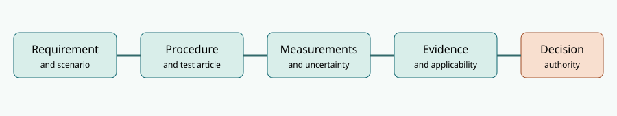

NS-TE8.1 — System Test and Evaluation case
Fictional engineering study. This package receives the unresolved NS-DI7.1 design baseline from Book 7. NS-TE8.1 names the evaluation campaign, not a new qualified product configuration. All measurements, decisions and datasets in this package are invented to teach engineering reasoning. Nothing constitutes operational certification.
Trace the evidence chain

The requirements, test plan, synthetic 40-trial timing dataset, evidence register and discrepancy register are editable. Run the standard-library Python audit to reproduce the numerical examples and to identify stale, missing and failed evidence. Read the full treatment in Book 8. The inherited design assumptions are developed in Book 7.
Sampling is not the same as qualification
The controlled synthetic degraded latency set has 40 trials and zero values above 500 ms. With independent, identically distributed Bernoulli exceedance indicators and no failures, the exact one-sided 95% upper confidence bound for exceedance probability is
\[ p_U=1-0.05^{1/40}\approx0.07216. \]
This is far above the 0.01 exceedance fraction associated with a p99 requirement. Under the same optimistic assumptions, 299 independent zero-exceedance trials are needed for the one-sided 95% upper bound to fall below 0.01. Those assumptions can fail for correlated requests or an unrepresentative test environment. Even 299 favorable tests cannot establish extrapolation to untested operating conditions.
A separate boundary measurement of 493 ms can satisfy a raw 500-ms threshold but fail a predeclared illustrative 12-ms guard band: an upper-limit acceptance rule requiring measured time no greater than 488 ms. The 12 ms is assumed expanded uncertainty for teaching, not an estimate from the dataset. No single guard-band rule fits every contractual or risk context.
Inherited engineering defects stay open
- Eight-hour modeled reliability with shared hazards: 0.97863, below 0.98.
- Logistics-adjusted modeled availability: 0.98644, below 0.99.
- Accessibility trials: 19/20 observed within the fictional limit, without sufficient confidence to establish a 95% population fraction.
- Recovery drill: 14 min, failing the 12 min requirement.
- One HIL record applies to NS-DI7.0, not the received NS-DI7.1 baseline; the cyber replay test remains planned.
Readiness recommendation: HOLD, pending disposition of the design shortfalls, execution of missing tests, applicable baselines, and a defensible sampling and uncertainty plan. Passing a subset of laboratory checks cannot convert a failing model or stale evidence into compliance.
Practitioner references
- NASA Systems Engineering Handbook V&V implementation outline: verification/validation flow, test articles, test environments and qualification.
- NIST Technical Note 1297: combined and expanded measurement uncertainty.
- NIST conformity decision rules: acceptance risk and guard bands.
These references guide method selection; the actual fictional test rules and assumptions are defined in the case artifacts, not claimed to come from any standard.